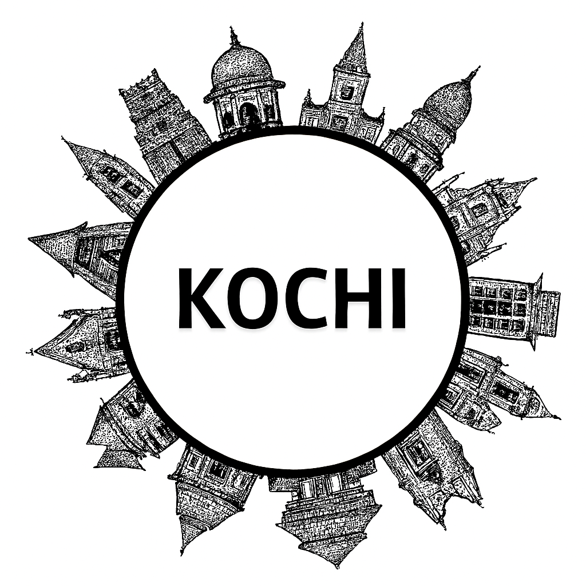

Kochi
Kochi, also known as Cochin, is a vibrant port city in Kerala that blends history, culture, and modernity. Known as the “Queen of the Arabian Sea,” Kochi has been a hub of trade and cultural exchange for centuries. The iconic Chinese fishing nets, Fort Kochi, and Mattancherry Palace reflect its colonial past. Jew Town and the Paradesi Synagogue showcase its diverse heritage. Kochi is also famous for its Kathakali performances, spice markets, and backwaters. Today, it thrives as a cosmopolitan city with a mix of tradition and modern charm.
Kochi, often called the “Queen of the Arabian Sea,” is a vibrant port city in Kerala that beautifully blends history, culture, and modernity. Known for its scenic backwaters, Chinese fishing nets, and colonial-era architecture, Kochi has long been a gateway for traders from across the world. The city’s landmarks include the historic Fort Kochi, Mattancherry Palace, and the Paradesi Synagogue, reflecting its diverse heritage of Portuguese, Dutch, and Jewish influences. Today, Kochi is also a hub of art and innovation, hosting the Kochi-Muziris Biennale, India’s largest contemporary art festival. With its bustling spice markets, serene waterfronts, and cosmopolitan spirit, Kochi stands as a dynamic destination where tradition and global culture meet.
Peaceful Nature Spots
Historical Places
Local Markets
Famous Festivals
Famous Local Food Items
More Details
Gallery